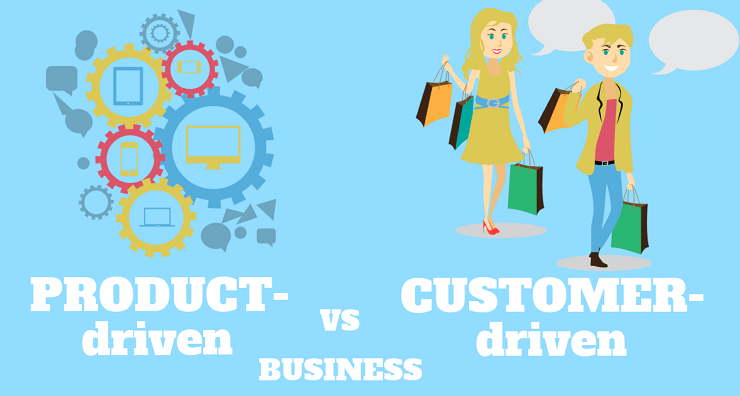
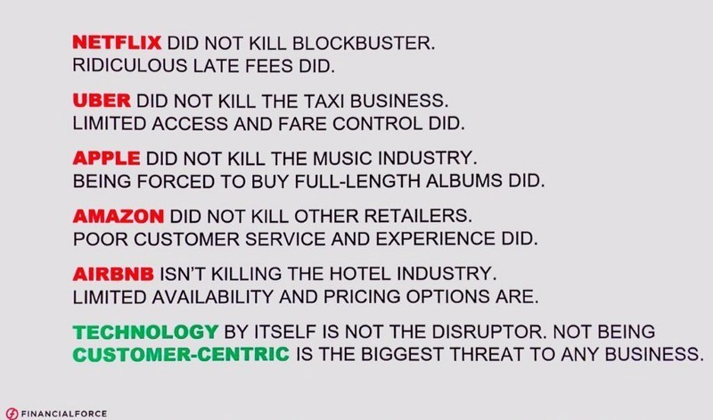

If thinking is necessary, thinking and acting differently is more than necessary.Emerging technologies, paradoxically, encourage behavioural shifts that necessitate new approaches, structures, and organisational models. The technology that transforms is pressured to transform. Rapid, continuous, and unanticipated changes are the norm. Customers' interactions with digital, virtual services are becoming increasingly important. Change motivates him, and he motivates others to change as well. The evolution of evolution.
We have a tendency to reflect the client from a digital standpoint as a user of apps, the web, or mobile devices. Appearances of programmes have gradually progressed from argument and picture interfaces to the convergence of services, experiences, interaction, and relationships. In this scenario, a new mental model forms. To address this changing context, a new organisational paradigm is being pushed to emerge.

The smartphone is now the personal and portable gadget that allows us to connect almost everything in our life. Digital form screens are no longer used in applications. They are necessary or complementary functions that are inextricably linked to our personal and professional lives. In the Digital Age nothing is isolated, everything is a complement.
Connecting with applications entails interacting with a universe of services, organisations, communities, individuals, and society as a whole. An interaction with no time or space boundaries or perimeters. Individual or group contacts have stimulated us to new reactions, thoughts, and ideals since the birth of humanity. In the beginning, the tradition of values was oral, nowadays it is visual.
Disintermediation potential, instantaneity, integration, and wholeness are all factors that tend to dominate in the digital setting. The absence of expectations in the physical experience is acceptable in the digital experience. The demand is for immediate and comprehensive attention to the problem. There are only clicks or taps between the stimulation, the search, the encounter, and the complete execution of the event. There's nothing else.
Monitoring, understanding, forecasting, and impacting the customer's digital experience necessitates tools, techniques, methods, processes, thinking, and actions that are vastly different from pre-digital physical strategies. Organizations have new opportunities and problems as a result of technologies that stimulate new behaviour. Physical experience is not equivalent to digital thinking. Industrial thinking does not lead to digital action. There are no gaps between mental models; rather, different, distinct, and non-complementary aspects exist. The technology that remodels loses relevance with the new models it helps to create.
Identifying a customer's digital thinking in more digital moments necessitates a natively digital mindset in order to find possibilities, design solutions, sell products, and evaluate outcomes... Essentially, everything is digital. Being customer-centric is not the same as being customer-focused. It's putting yourself in your shoes, recognising the intricacies of your situation, and predicting your decisions.
because nothing is unique in the Digital Age, and no one exists in the digital cosmos alone. There will always be others who do things better or differently than we do. To put yourself in the shoes of a customer and interact with him is to be customer-facing. It's no coincidence that today's Big Tech Companies include Facebook, Apple, Google, Amazon, Microsoft, and others. They are a part of everyone's daily lives. Without social media, smartphones, search, email, ecommerce, and windows, we would not be able to function as a society. Not even on an individual basis. Being digitally excluded is akin to "not existing." And 'not to be' can be a fun way to disengage but not in any case.

Organizations have recently invested in Business Intelligence to aid in their analytical and decision-making processes. Many projects have come to a halt or have been misused. Perhaps it was because they mirrored the facts, which he didn't comprehend. Until recently, change moved at a slower pace, technical transitions took longer, and customers had longer-term expectations. The personal computer, the internet, online services, social networks, smartphones, mobile apps, ecosystems, communities, platform influence, and paradoxical misinformation are all coming into their own. Businesses are confronted with the question of whether they should be product-driven or customer-driven.
If changes in the personal universe are followed by trips to the mall and the allure of new clothes and gadgets, there are significantly more lengthy travels than short trips in the organisational universe. And it's a long one. We don't alter our systems like we do our clothes or our phones. The Digital Age's changes in consuming habits, values, and expectations...of relationships, engagement, and influence...require technological and strategic repositioning of enterprises. Coexistence with new and old applications is a question of survival. And, like in the past, ancient apps are still the functionality or transactions of massive, monolithic, self-contained systems.
If changes in the personal universe are followed by trips to the mall and the allure of new clothes and gadgets, there are significantly more lengthy travels than short trips in the organisational universe. And it's a long one. We don't alter our systems like we do our clothes or our phones. The Digital Age's changes in consuming habits, values, and expectations of relationships, engagement, and influence require technological and strategic repositioning of enterprises. Coexistence with new and old applications is a question of survival. And, like in the past, ancient apps are still the functionality or transactions of massive, monolithic, self-contained systems. Based on the customer's experience, the customer-driven organisation designs and manufactures products. Product-driven design and production focuses on the consumer experience. It makes a significant difference in the Digital Age, and it can determine whether you succeed or fail.

Amazon and its technology firm, AWS, are a good example (Amazon Web Services). Amazon is an expert at turning its solutions to your problems into commercial goods and services. Amazon recognised that the issues it faced in developing new infrastructure for each new service offering were similar to those faced by other online enterprises. It launched AWS, the disruptive pay-per-use cloud computing platform, in 2003 with the technologies it applies to its operations. AWS drew developers as customers by offering no fixed charges in its environment offering, which was novel at the time. AWS had no idea what would be the most popular among developers. Their business approach allowed them to pick and choose the services they desired. Since then, Amazon has been analysing its customers' behaviour and developing and improving its products. Large corporations began switching to AWS over time. That has been the case.

Emerging technology, as well as startups and their innovative business models, are not the ones causing disruption. It is incumbent enterprises' reluctance in anticipating that customer behaviours and expectations will change as they update their digital tools as a result of new technology's applicability. From the personal computer to the smartphone...from mobile apps to conversational interfaces from micro-devices to Internet of Things sensors from current to future values of technology in society and the individual. We don't seek products, we want the experience we have with them.
Incumbent organisations have a legacy of earlier technologies to maintain, ranging from the earliest to the most modern, all of which serve critical responsibilities to keep the organisation running. Its discontinuity is untenable in view of the Digital Business's increasing agility. Integration is a given. However, the consumer experience must be considered. In real time, it translates to stimulation, investigation, attraction, purchase, payment, realisation, and influence. Integration is insufficient on its own. At the very least tactically, the heritage must assume its functioning under new standards. Automation of batch operations, deep transaction monitoring, and self-contained programmes, as well as their little-known, closely connected interdependencies with substantial infrastructure dependency, are the paths to take.
And not in the user interface (GUI) layers, either. It's often more cost-effective to tactically manage the programme as a whole rather than using RPA (Robotic Process Automation) concepts in its interface interactions. With the exception of industrial procedures involving a large number of repetitive activities and specific circumstances, which are worthy of a separate dissertation. Automation of jobs in all layers of computation and application is required for a comprehensive customer experience.
It is feasible to discover and adjust bottlenecks using automation and monitoring, with the goal of achieving real-time transaction capacity, self-resilience, and back-end scalability, which are required for non-fragmented front-end experiences. A tactical cohabitation and transition strategy. Until event-oriented architectures, distributed in microservices, are idealised, planned, executed, and matured, supported by a multi-cloud approach, and integrated and coordinated with all the technological multitudes of the Digital Age. Both next-generation IT heritage and digital infrastructures are long, well-planned, dynamically adjustable movements in curves with distinct trends: the first lowering, the final ascending.
In summary, some premises would make up a framework for legacy system change. From the computing layer to the customer experience, automation and comprehensive monitoring of the entire legacy application stack are required. A multi-cloud and opensource-first strategy is being pursued. API platforms, data and application integration hubs, and backoffice and frontoffice integration strategy Mobile, IoT, Blockchain, Low Code, Event, and Mashup Architecture platforms, among others, are all part of the frontend innovation strategy. Software engineering and ongoing customer experience discovery are at the heart of the agile development architecture.
The methodologies change when the scope of digital initiatives' end-to-end customer experience expands from the front office to the back office. If the experience in the back office can be frustrating, the transformation in the front office must be managed. Being data-driven in the digital age means having real-time analytics. The data that goes into data lakes, also known as ocean lakes, is primarily historical and backup data rather than decision-making data. And being data-driven without being customer-facing is impossible. The Big Tech Companies (Facebook, Amazon, Google, Apple, and Microsoft) do not lead, prevail, or expand by accident. Another dissertation is needed to discuss platform lifespans. Big Tech's cornerstones, however, include innovation, agility, autonomy, cooperation, and client obsession, not only the concept of platforms. A new dissertation would also be required.
The Digital Age has its essences: disintermediation, agility, instantaneity, simultaneity, sharing, influence, empowerment, heterogeneity, dispersion, deconcentration are some of the characteristics of the Digital Era. Each one moves at his or her own pace. However, three trends are causing a technological reorganisation: cloud computing, digital transformation, and open source software. The cloud is a startup fertiliser, a gig economy viability booster, a network economy booster the largest open source community. Digital transformation can be the sunrise for many organizations, and the sunset for others. Whether it's for end-users or technology providers. The most successful source of ongoing, open, and interoperable innovation is opensource.
Digital transformation, customer experience, is a source and destination of skills and capacities of innovation, customisation, agility, attractiveness, and impact for technology-consuming enterprises in a wide range of industries. Their primary goal is to stay relevant to the customer. They must be customer-focused and outward-facing. Participating in the customer's digital moments is part of being digital. And to participate means being there at the right moment, in the right place, with the right offer. To put it another way, to be Data-Driven. What if the organisation was not under all of these circumstances? Having trustworthy partners, suppliers, and service providers. This is the ecosystem's value-added value.
The trends of organisational strategy movements in the technological market are guided by these conditions and characteristics of the Digital Age. The organisation that consumes technology is more likely to get it from those who use it to run their own business, or from customer-facing companies like Amazon, Google, Microsoft, Apple, and others. In addition, you can buy in the Cloud by subscribing. The company that sells the most cutting-edge technology is likely to be the one that can demonstrate its value in its own operations. Amazon, Google, Microsoft, and others are just a few examples. And make it available in the Cloud via subscription.
Anyone seeking digital transformation whose aim is the client and their experience will recognise the competitive advantage of the customer-facing organisation that sells its technology. Who would employ the customer-facing, customer-centric, data-driven technology of winning enterprises in their businesses? This explains why organisations who did not foresee and prepare for this significant change likely to go out of business. With the advent of digital transformation, fewer and fewer software and hardware, as well as setup consulting services, are purchased. Subscriptions for services that are isolated from the infrastructure are growing in popularity. Alternatives that are both inventive and financially sustainable are increasingly being sought. Digital-first, cloud-first, and opensource-first are common techniques.
Working with disruptors is a part of being digital-first. Many incumbents already perceive startups as partners in an integrated ecosystem of services, innovation, and appeal, rather than as competitors. Being opensource-first means listening to the wisdom of the most productive and forward-thinking communities. What is the general trend in the technology market? Concentrate your efforts on significant cloud providers (customer-centric, customer-facing, and data-driven). To seek out services and operations that promote continuous innovation from people with the capability and ability to consult agnostic, multi-national, multicultural, and multidisciplinary groups. Opensource distributors can help you innovate. This explains why many pre-digital businesses have closed their doors. It's difficult to create something appealing without first experiencing it.
Cutting-edge technology is no longer hardware, software... it's experience.
The IT services market is undergoing significant changes. For a digital renovation that demands the digital experience itself as a principle, a reference, from a joint offer of data centre, hardware, software, and services... After all, digital thinking is a byproduct of the digital journey. Those who did not foresee the changes and are challenged to be digitally transform, need support more than they can support. By decrees and tales, there is no way to take a quantum leap while remaining relevant. It's impossible to convey the mindset of a journey that hasn't yet occurred.
Those that excel at their jobs in technological niches, such as the Internet of Things, Artificial Intelligence (mostly distributed in micro-devices), Blockchain, Edge Computing, Augmented Reality, and others, will find opportunities among the current trends. Those who foresee and planned ahead of time will have opportunity to expand their domain (maybe the Big Techs) or to replace their market places (those pre-digital that try to transform).
Customers' experiences are helping Big Techs extend their inventive potential. The pre-digital ones propose to be software integrators, multi-cloud orchestrators, and use opensource brands in traditional commercialization models. They offer innovation labs, hardware and shareware software as a service, Cloud from mosaics built through mergers and acquisitions, and Cloud from mosaics built through mergers and acquisitions. There will be space, but not in the same way as before. There will be new venues, but they will be populated by a digital culture in its fullest sense, with all of the digital definition's essence and characteristics.